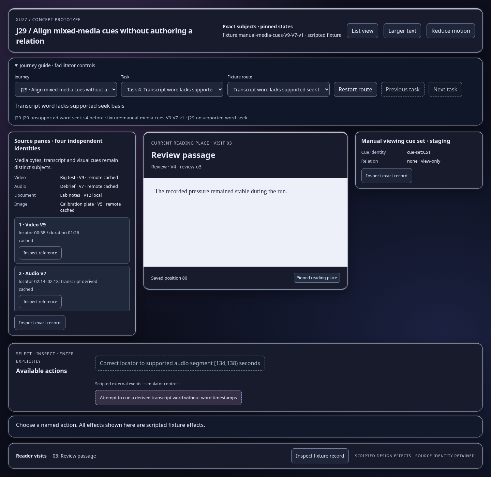
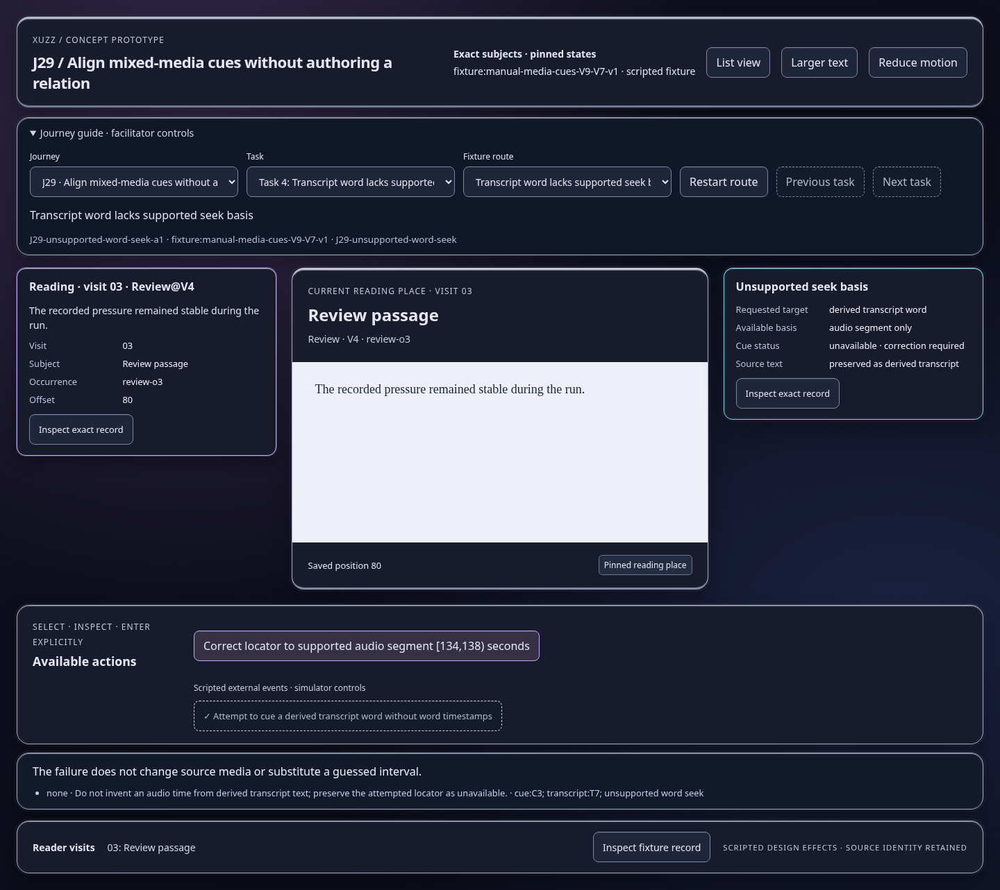
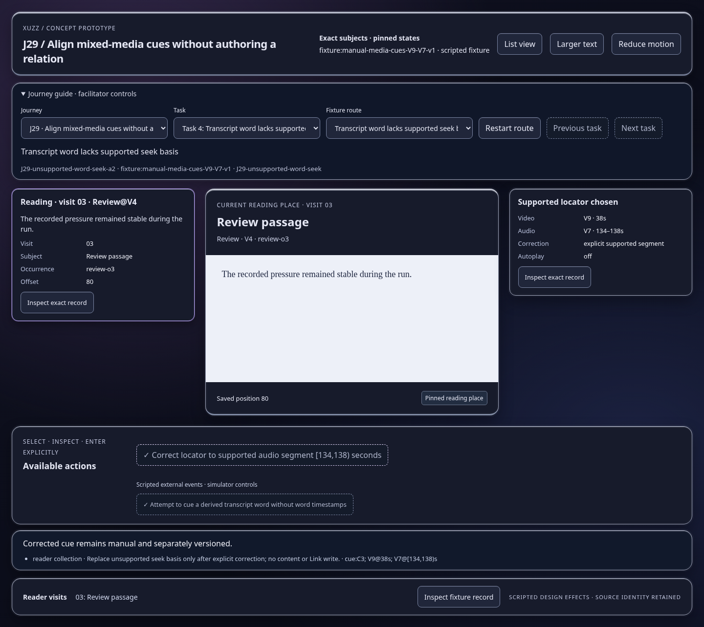

Scripted concept states; inspect the effect and identity trace. Images show actual prototype rendering.

The failure does not change source media or substitute a guessed interval.
Open this represented state
Corrected cue remains manual and separately versioned.
Open this represented state